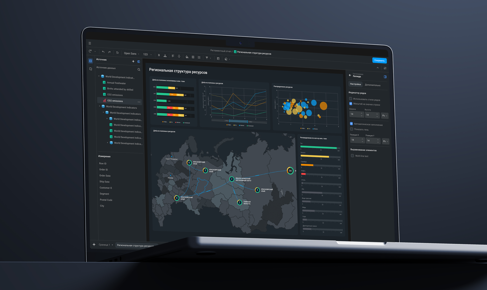
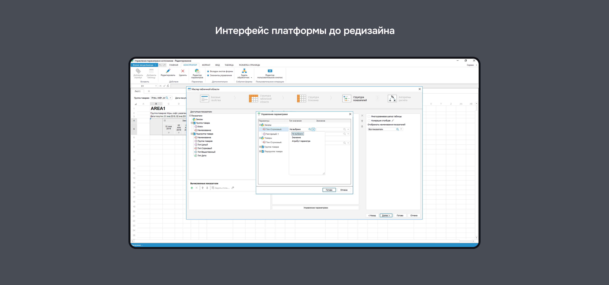
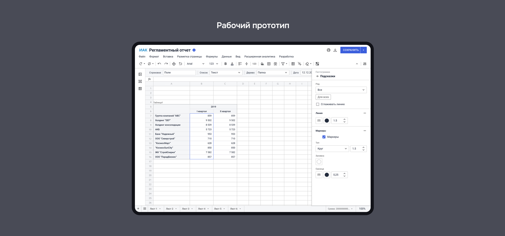
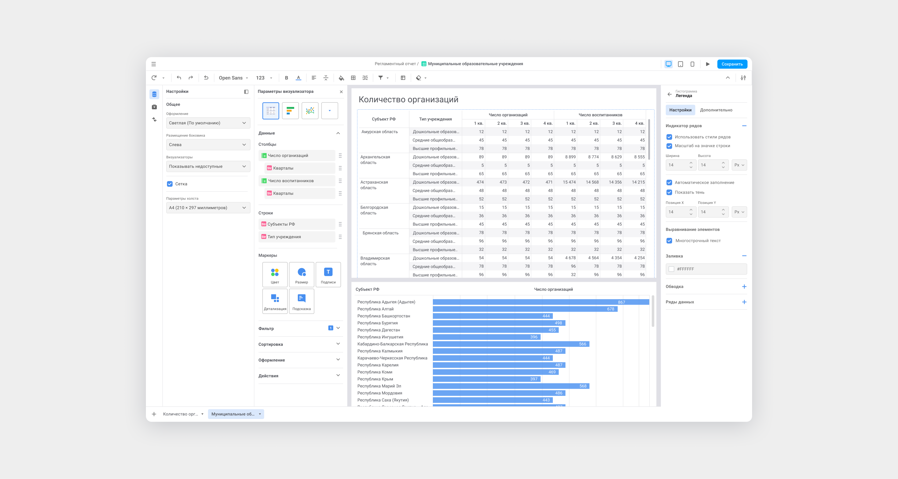
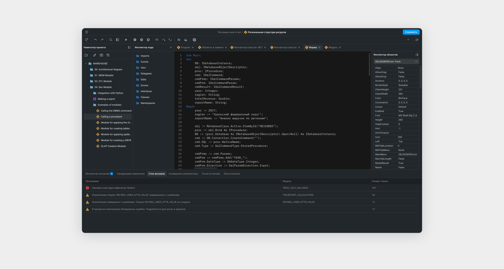
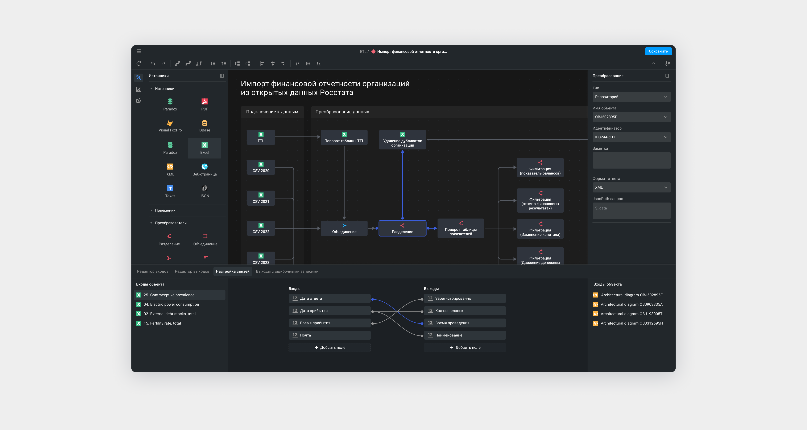
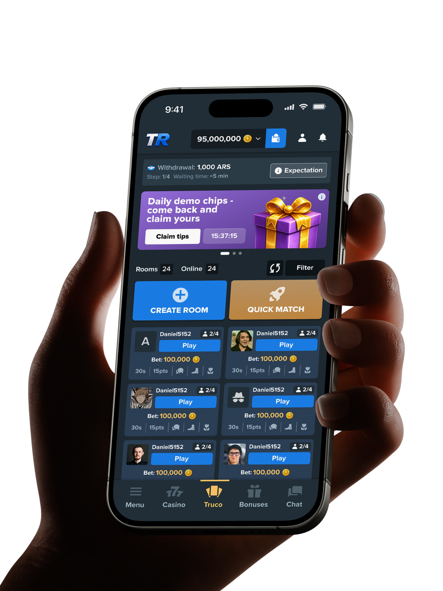
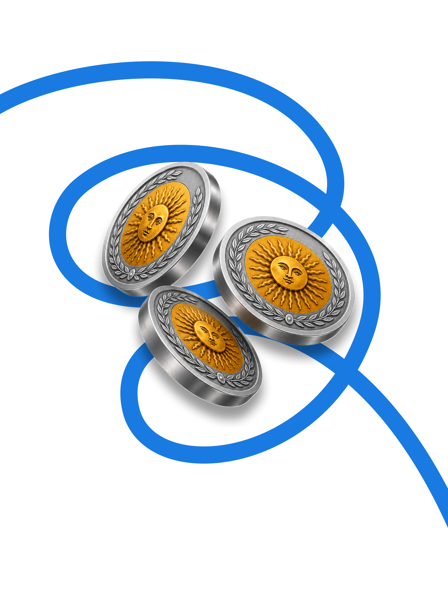

Весь UI платформы проектировался по гайдлайнам Microsoft Office, предназначенным для десктопных систем.
Редизайн платформы должен был охватить больше 10 бизнес и системных инструментов, сохранив консистентность.
Дизайн платформы строился на одном UI‑ките без единой дизайн-системы и единых принципов проектирования.

Перед стартом разработки анализирую, как решены аналогичные проблемы у крупных игроков рынка: Tableau, Qlik и Power BI. Также обращаюсь к опыту Google, который решал похожую задачу при переносе функциональности Microsoft Office в Google Docs. Все перечисленные системы отказываются от опыта громоздкого RibonUX‑контекстного меню в пользу контекстных боковых панелей, это позволят минимизировать размер интерфейса в условиях работ с большой плотностью данных
Выбираю самый высоконагруженный инструмент платформы и собираю на его основе прототип интерфейса, чтобы проверить гипотезы и UI-решения. Совместно с бизнес-аналитиком разбираем функциональные требования и переносим их в прототип, валидируя решения с BI-экспертами. Поскольку инструменты платформы тесно связаны, большинство UI/UX-решений можно масштабировать на другие инструменты. Это позволилит ускорить разработку и сохранить единые паттерны взаимодействия во всей платформе.

Было детально спроектировано и валидировано в рамках работы всего над одним инструментом.
Создано для фиксации всех состояний и вариантов взаимодействия интерфейса.

После обкатки всех сценариев на одном из инструментов приступаю к следующему этапу UI что бы привести все элементы к единому стилю и сложить единую картину. Еще при работе над прототипом все UI элементы заносились в дизайн-систему что в будушем позволило значительно упростить следующий этап редизайна платформы.
Основной задачей при разработке концепта было разработать простой минималистичный интерфейс, чтобы сфокусировать внимание пользователей на контенте и целевых действиях и не тратить драгоценное время на графический контент.





